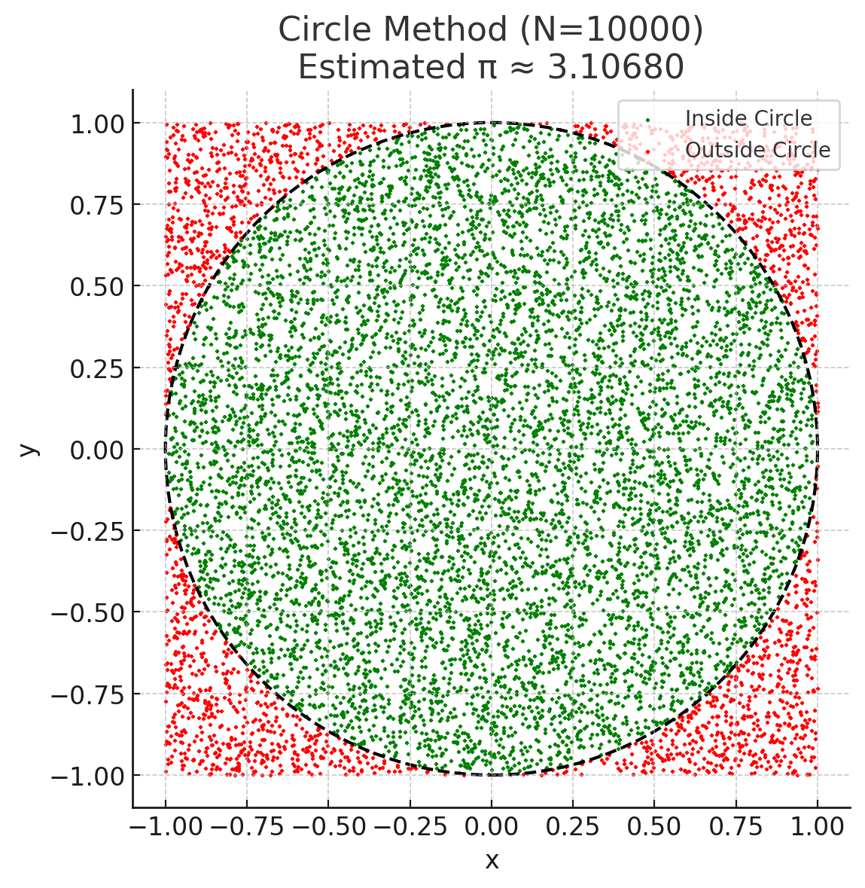
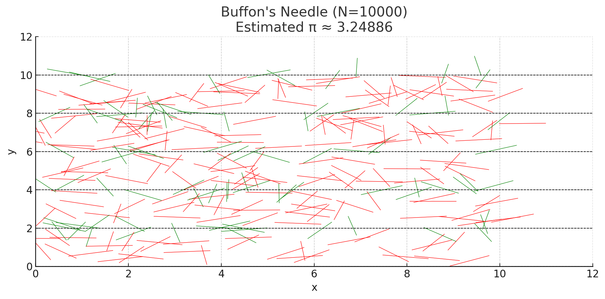
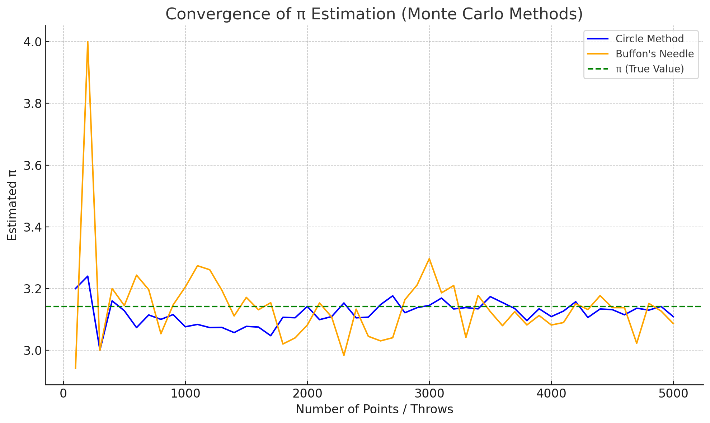

Problem 2
🎯 Estimating \(\pi\) using Monte Carlo Methods
📘 Motivation
Monte Carlo simulations are computational techniques using randomness to solve problems. One famous use: estimating \(\pi\) via geometric probability. By generating random points or dropping virtual needles and checking how often they satisfy geometric conditions, we can approximate \(\pi\) in a simple, visual way.
🧮 PART 1: Estimating \(\pi\) Using a Circle
1️⃣ Theoretical Foundation
Imagine a unit circle (radius \(r = 1\)) inside a square of side length 2:
- Area of square: \(4\)
- Area of circle: \(\pi\)
So, if we randomly throw points in the square, the ratio inside the circle approximates:
Where: - \(N\) = total number of random points - \(M\) = number that land inside the circle
2️⃣ Simulation Code (Python)
def estimate_pi_circle(num_points=10000):
x = np.random.uniform(-1, 1, num_points)
y = np.random.uniform(-1, 1, num_points)
inside = x**2 + y**2 <= 1
pi_est = 4 * np.sum(inside) / num_points
return pi_est
3️⃣ Visualization
- Green dots: Points inside the circle
- Red dots: Points outside
- The ratio gives an estimate of \(\pi\)
🖼️ (Plot shows circle boundary and distribution of points)
4️⃣ Analysis
- Accuracy improves as \(N\) increases.
- Converges relatively fast with low variance.
🪡 PART 2: Estimating \(\pi\) Using Buffon's Needle
1️⃣ Theoretical Foundation
Drop a needle of length \(L\) on a surface with parallel lines spaced \(D\) apart (\(L \leq D\)).
Let:
- \(T\) = total number of throws
- \(C\) = number of crossings (needle crosses a line)
Then:
2️⃣ Simulation Code (Python)
def buffon_needle(num_throws=10000, L=1.0, D=2.0):
theta = np.random.uniform(0, np.pi/2, num_throws)
d = np.random.uniform(0, D/2, num_throws)
crosses = d <= (L / 2) * np.sin(theta)
C = np.sum(crosses)
return (2 * L * num_throws) / (D * C) if C > 0 else np.nan
3️⃣ Visualization
- Green needles: Cross lines
- Red needles: Do not cross
- Dashed lines: Evenly spaced lines
🖼️ (Plot shows needles and line grid)
4️⃣ Analysis
- Estimates improve slowly.
- Convergence is noisy due to fewer crossings.
- Requires more samples for accurate results.
📊 Convergence Comparison
We compare both methods by plotting \(\hat{\pi}\) estimates vs number of iterations.
| Method | Speed | Variance |
|---|---|---|
| Circle Method | Fast | Low |
| Buffon’s Needle | Slower | High |
🖼️ (Graph shows Circle Method stabilizing faster and closer to \(\pi\))



✅ Conclusion
- The Circle Method is simpler, faster, and more stable for estimating \(\pi\).
- Buffon's Needle is elegant and geometric, but slower to converge.
- Both demonstrate how randomness and probability can be used to estimate constants.
📌 Deliverables
- ✅ Circle-based simulation with explanation and plots
- ✅ Buffon’s Needle simulation with derivation and visual
- ✅ Convergence analysis plot
- ✅ Mathematical and practical insights